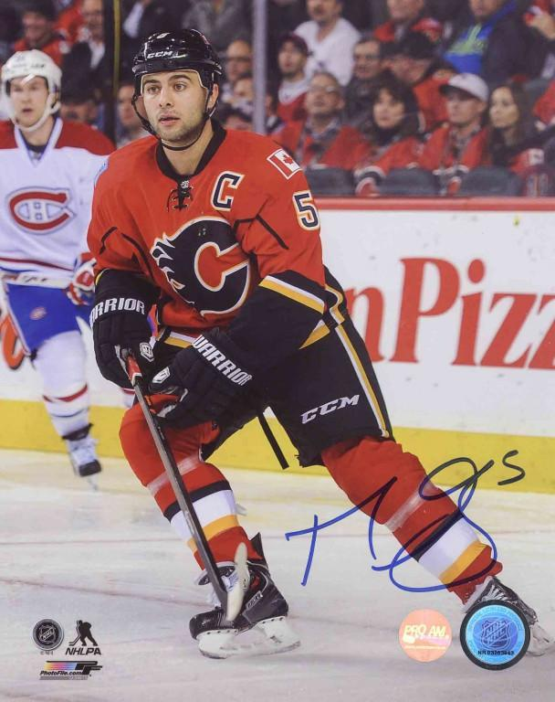

Mark Giordano: A Tribute
#5 - Captain of the Calgary Flames

Mark Giordano fires a top shelf snipe past goalie guy
Some facts about Mark Giordano
- Born October 3, 1983
- Has played entire NHL career with Calgary Flames
- Won the Norris Trophy after the 2018/19 season
- Won the stanley cup against the tampa bay lightning in 2004, but let them have it because martin st louis is so tiny